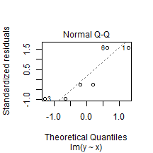
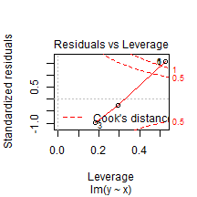
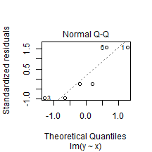
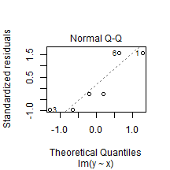
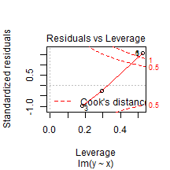
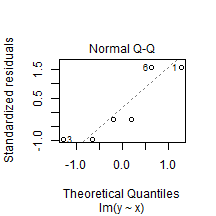
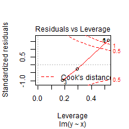
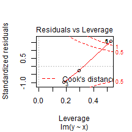
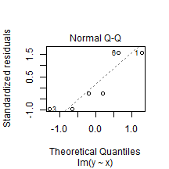
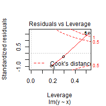

Short Introduction to R Language
Topic for today
Short Introduction to R Language
Viktor Dmitriyev Oldenburg, Germany 21.01.2015
What is R?
Language for statistical computing tasks
Free and open source software
environment
Different
"command-line interaction"
paradigm
Widely supported
Follows latest trends in industry and academia
R is a simple programming paradigm
Command-Line Interface
Pipe-based statistics (command-line statistisc)
Almost no-programming background is required
Language is similar to proprietery
S
and
S-plus
Open source analog for
SAS
and
SPSS
like statistical tools
R is robust and widely supported
Academia
Academia pushs lates updates as pacakges
Statistically heavy tasks
Industry
Idustry is very motivated in hiring R-spcialist
Volunteers and enthusiasts
Contributing to the community
Writing articles, blogs, answering questions
Latest trends in R
Developer Tools
that consider dest experiences existing
Ability to parallelize statistical workload
Web based IDE(Integrated development environment) version of RStudio
Integration with other tools
Can be easily integrated with other tools
Unix-way of performing tasks
Open-source
Comman-Line based interaction
Example of integration:
SAP HANA
What is SAP HANA?
Where SAP HANA is moving now
How R language and SAP HANA integrates
# R code example x <- c(1,2,3,4,5,6) y <- x^2 plot(lm(y ~ x))


Thank you for your attention!
This presentation was created with means of R language
References
The R Project for Statistical Computing
RStudio - Powerful IDE for R
"Introduction to R", Michael Clark
"An Introduction to R", Abecasis G.
R Markdown — Dynamic Documents for R
R (programming language) - Wikiw
 
    
  